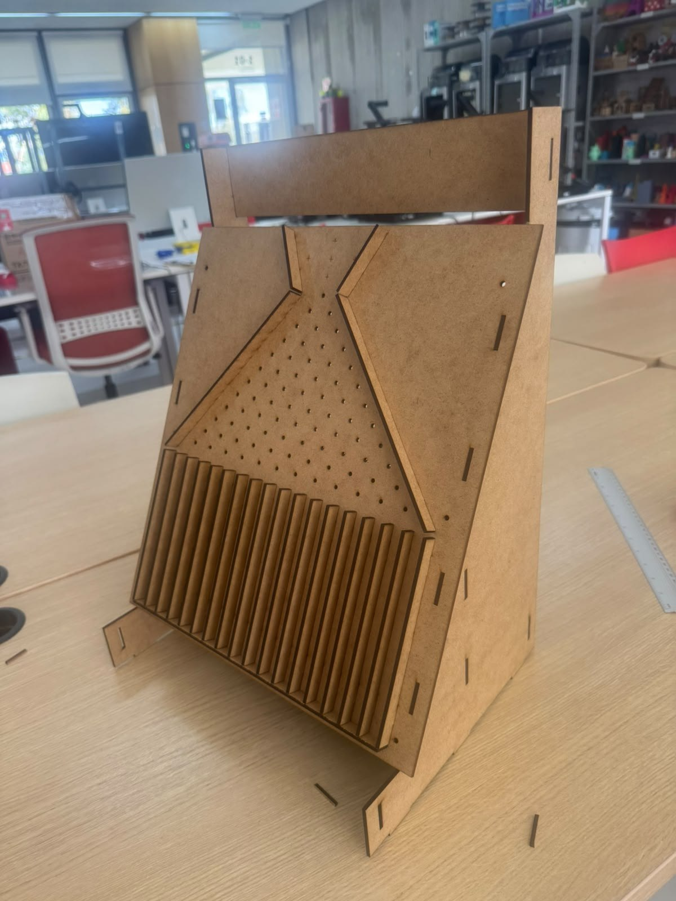

Identificar las dificultades
Reconocer los contenidos que requieren mayor apoyo mediante un diagnóstico participativo con docentes y estudiantes.
PROYECTO 02 / EDUCACIÓN Y FABRICACIÓN DIGITAL
Matemática tangible: diseño y fabricación de recursos didácticos para la Unidad Educativa Miguel Merchan
Convertir conceptos abstractos en experiencias de aprendizaje a través del diseño y la fabricación de recursos manipulables.
Descubre el proyecto ↓
01 / EL PROPÓSITO
Materiales que permitan explorar la matemática con las manos, la observación y la práctica.
Matemática tangible busca desarrollar recursos didácticos manipulables que fortalezcan la enseñanza y el aprendizaje de conceptos matemáticos en estudiantes de octavo de Educación General Básica de la Unidad Educativa Miguel Merchán.
La propuesta conecta el Diseño Asistido por Computador (CAD) con las tecnologías del FABLAB de la carrera de Ingeniería Industrial de la Universidad de Cuenca. Los recursos se orientan a conceptos de geometría, trigonometría y álgebra.
El proyecto parte de un diagnóstico con docentes y estudiantes, y contempla el diseño, la fabricación y la validación pedagógica de los materiales en el entorno escolar.
Los 200 estudiantes y los 15 recursos corresponden al alcance y las metas de la formulación del proyecto. Las fotografías documentan un prototipo y su proceso de ensamblaje.
02 / LÍNEAS DE TRABAJO
Cuatro etapas previstas para conectar las necesidades del aula con las herramientas del laboratorio.
Reconocer los contenidos que requieren mayor apoyo mediante un diagnóstico participativo con docentes y estudiantes.
Elaborar quince modelos CAD que representen conceptos de trigonometría, geometría y álgebra.
Construir los materiales con tecnologías del FABLAB y verificar su funcionalidad según las necesidades pedagógicas identificadas.
Utilizar los recursos en el aula y evaluar su aporte a la comprensión, la participación y la motivación estudiantil.
03 / EL PROCESO EN IMÁGENES
Las imágenes compartidas muestran dos momentos del mismo recurso: el tablero y sus piezas durante el ensamblaje, y la estructura ya montada en el laboratorio.
Un acercamiento al trabajo de diseño y construcción que hace posible pasar del modelo digital al material físico.
Ver el proceso ↓04 / QUIÉNES LO IMPULSAN
Diseño y fabricación digital al servicio de la educación.
Universidad de Cuenca + Unidad Educativa Miguel Merchán
Facultad de Ciencias Químicas
FABLAB de la carrera de Ingeniería Industrial
El ciclo corresponde al encabezado de presentación. La programación detallada del documento incluye actividades posteriores, hasta 2028.
05 / REGISTRO DEL PROYECTO
Dos fotografías del prototipo y la presentación del proyecto. Selecciona una imagen para ampliarla.
Imágenes proporcionadas para el proyecto Matemática tangible.
El conocimiento se fortalece cuando se comparte.
Volver a Projects Hub ↗